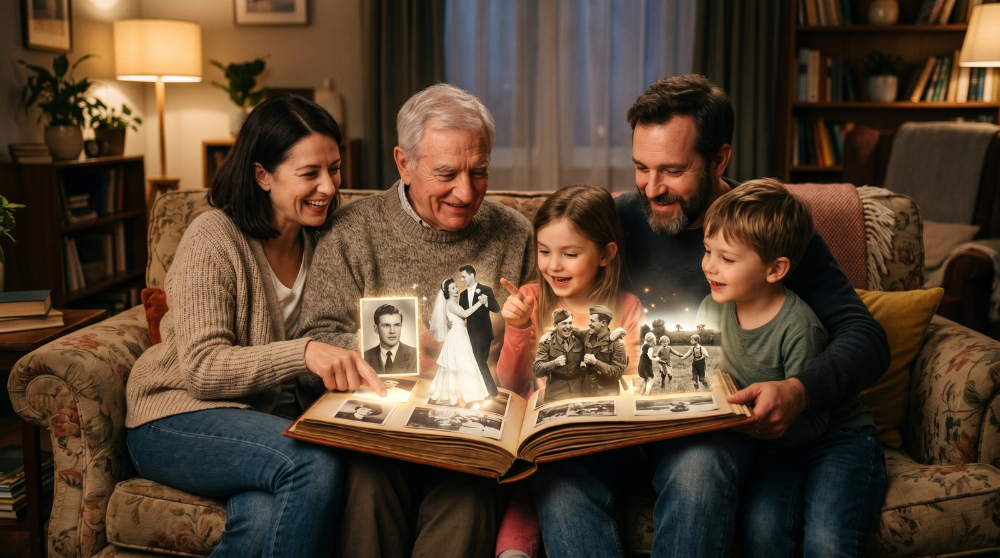

9 мая — это особенный день, когда мы чтим память наших предков. Оживите старые фотографии с помощью сервиса VideoAI и подарите своим близким тёплые воспоминания.
Оживление старых фотографий позволяет перенести воспоминания в современный формат. Это может стать отличным подарком ко Дню Победы, который останется в сердцах ваших близких. Например, вы можете создать видео для бабушки, где оживлённые лица её родителей напомнят ей о счастливых моментах прошлого.
Семейный архив, дополненный такими видео, станет настоящим сокровищем для следующих поколений. Как оживить старое фото — это не просто технический процесс, а способ сохранить память о героях семьи, которые участвовали в Великой Отечественной войне.
Для успешного оживления фотографии важно выбрать подходящее изображение. Идеально подойдут снимки, на которых лицо человека изображено анфас и без значительных повреждений. Чем резче фото, тем лучше результат. Если фото старое или повреждено, заранее его отсканируйте и отредактируйте в графическом редакторе, улучшив резкость и контраст.
Рекомендуется выбирать фотографии с одним лицом, чтобы избежать сложностей в анимации. Для детального понимания процесса ознакомьтесь с нашей статьей оживить фото дедушки, где мы делимся дополнительными советами и примерами.
Создание оживлённого видео с помощью VideoAI максимально просто. Перейдите на сайт botisk.ru и загрузите фотографию, которую вы хотите оживить. Нет необходимости регистрироваться — просто следуйте инструкциям. Укажите нужные параметры движения, и через 60 секунд ваш видеоролик будет готов.
Первое видео создаётся бесплатно, что позволяет оценить качество работы сервиса без лишних затрат. Фото питомца — ещё один пример того, как можно использовать этот сервис для создания памятных роликов.
| Способ | Время | Цена | Результат |
|---|---|---|---|
| VideoAI | ~60 сек | От 290р за 10 видео | Профессиональное качество |
| Студия | 3-5 дней | От 5000р | Высокое качество |
| Фрилансер | 1-2 дня | От 1000р | Среднее качество |
| Зарубежные сервисы | ~60 сек | От $10 за видео | Хорошее качество, но сложная оплата |
Без регистрации. Первое видео — бесплатно. Загрузите снимок — получите живое видео за 60 секунд.
Создать видео из фото →Процесс занимает около 60 секунд. После загрузки фото и выбора параметров движения, видео будет готово практически моментально.
Да, но предварительно рекомендуется отсканировать и улучшить фото с помощью графических редакторов для достижения наилучшего результата.
Первое видео создаётся бесплатно, далее стоимость составляет от 290 рублей за 10 видео. Оплата возможна картами РФ.